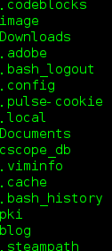
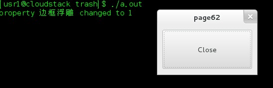
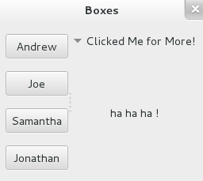
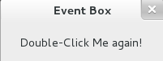
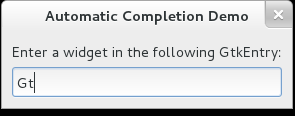

GTK Demos
update@2013-08-25
1 打印某个目录下的所有文件
将$HOME目录下的文件都打印出来，代码如下，打印结果如图1
#includeint main(int argc,char *argv) { GDir *dir = g_dir_open(g_get_home_dir(),0,NULL); const gchar *file; if ( !g_file_test(g_get_home_dir(),G_FILE_TEST_IS_DIR) ) g_error("Error:You do not have a directory!\n"); while ((file = g_dir_read_name(dir))) g_print("%s\n",file); g_dir_close(dir); return 0; }

图1 打印结果
2 定时器和进度条
使用定时器来制作一个进度条，运行结果见图2。
#includestatic gboolean pulse_progress(GtkProgressBar *bar); int main(int argc,char *argv[]) { GtkWidget *window,*progress; gtk_init(&argc,&argv); window = gtk_window_new(GTK_WINDOW_TOPLEVEL); gtk_window_set_title(GTK_WINDOW(window),"Timer"); progress = gtk_progress_bar_new(); gtk_progress_bar_set_pulse_step(GTK_PROGRESS_BAR(progress),0.1); g_timeout_add(100,(GSourceFunc)pulse_progress,(gpointer)progress); gtk_container_add(GTK_CONTAINER(window),progress); g_signal_connect(G_OBJECT(window),"destroy",G_CALLBACK(gtk_main_quit),NULL); gtk_widget_show_all(window); gtk_main(); return 0; } static gboolean pulse_progress(GtkProgressBar *bar) { static gint count = 0; gtk_progress_bar_pulse(bar); count++; return (count < 125); }

图2 运行结果
3 notify信号
如何使用notify信号，demo中将button的relief属性从GTK_RELIEF_NONE改成了GTK_RELIEF_HALF，信号notify::relief发出，回调函数property_changed执行，运行结果如图3。
#includestatic int destroy(GtkWidget *window,gpointer data) { gtk_main_quit(); return 1; } static void property_changed(GObject *button, GParamSpec *property,gpointer data) { gint value; g_object_get(button,"relief",&value,NULL); g_print("property %s changed to %d\n",g_param_spec_get_nick(property),value); } int main(int argc,char *argv[]) { GtkWidget *window,*button; gtk_init(&argc,&argv); window = gtk_window_new(GTK_WINDOW_TOPLEVEL); gtk_window_set_title(GTK_WINDOW(window),"page62"); gtk_container_set_border_width(GTK_CONTAINER(window),10); gtk_widget_set_size_request(window,200,100); g_signal_connect(G_OBJECT(window),"destroy",G_CALLBACK(destroy),NULL); button = gtk_button_new_with_mnemonic("_Close"); gtk_button_set_relief(GTK_BUTTON(button),GTK_RELIEF_NONE); g_signal_connect_swapped(G_OBJECT(button),"clicked",G_CALLBACK(gtk_widget_destroy),(gpointer)window); g_signal_connect(G_OBJECT(button),"notify::relief",G_CALLBACK(property_changed),NULL); gtk_button_set_relief(GTK_BUTTON(button),GTK_RELIEF_HALF); gtk_container_add(GTK_CONTAINER(window),button); gtk_widget_show_all(window); gtk_main(); return 0; }

图3 运行结果
4 vbox和expander
demo中演示了如何使用vbox(hbox类似),vbox左边放了几个button，右边是一个expander，运行结果见图4。
#include#define NUM_NAMES 4 const gchar *names[] = { "Andrew","Joe","Samantha","Jonathan"}; int main(int argc ,char *argv[]) { gint i; GtkWidget *window,*vbox,*hp,*expander,*label; gtk_init(&argc,&argv); window = gtk_window_new(GTK_WINDOW_TOPLEVEL); gtk_window_set_title(GTK_WINDOW(window),"Boxes"); gtk_container_set_border_width(GTK_CONTAINER(window),10.10); gtk_widget_set_size_request(window,200,-1); vbox = gtk_box_new(GTK_ORIENTATION_VERTICAL,5); expander = gtk_expander_new_with_mnemonic("Clicked _Me for More!"); label = gtk_label_new("ha ha ha !"); for ( i = 0;i < NUM_NAMES; i++){ GtkWidget *button = gtk_button_new_with_label(names[i]); gtk_box_pack_start(GTK_BOX(vbox),button,FALSE,FALSE,5); } hp = gtk_paned_new(GTK_ORIENTATION_HORIZONTAL); gtk_container_add(GTK_CONTAINER(window),hp); gtk_container_add(GTK_CONTAINER(hp),vbox); gtk_container_add(GTK_CONTAINER(expander),label); gtk_container_add(GTK_CONTAINER(hp),expander); gtk_expander_set_expanded(GTK_EXPANDER(expander),TRUE); g_signal_connect(G_OBJECT(window),"destroy",G_CALLBACK(gtk_main_quit),NULL); gtk_widget_show_all(window); gtk_main(); return 0; }

图4 运行结果
5 GtkEventBox
有些部件如GtkLabel不能对GDK事件做出响应，因为他们没有一个关联的GDK window。GtkEventBox可以解决这个问题，它是一个容器，能够帮助子部件捕捉事件。demo中一个GtkLabel被放入了GtkEventBox，它能够像一个button一样对用户的点击做出响应，运行结果见图5，左边是点击前，右边是点击后。
#includestatic gboolean button_pressed(GtkWidget *,GdkEventButton *,GtkLabel *); int main(int argc,char *argv[]) { GtkWidget *window,*label,*event_box; gtk_init(&argc,&argv); window = gtk_window_new(GTK_WINDOW_TOPLEVEL); gtk_window_set_title(GTK_WINDOW(window),"Event Box"); gtk_widget_set_size_request(window,200,50); event_box = gtk_event_box_new(); label = gtk_label_new("Double Click Me!"); g_signal_connect(G_OBJECT(event_box),"button_press_event",G_CALLBACK(button_pressed),(gpointer)label); gtk_container_add(GTK_CONTAINER(event_box),label); gtk_container_add(GTK_CONTAINER(window),event_box); gtk_widget_set_events(event_box,GDK_BUTTON_PRESS_MASK); gtk_widget_realize(event_box); gdk_window_set_cursor(gtk_widget_get_window(event_box),gdk_cursor_new(GDK_HAND1)); g_signal_connect(G_OBJECT(window),"destroy",G_CALLBACK(gtk_main_quit),NULL); gtk_widget_show_all(window); g_print("%s\n",G_LOG_DOMAIN); gtk_main(); return 0; } static gboolean button_pressed(GtkWidget *window,GdkEventButton *event,GtkLabel *label) { if ( event->type == GDK_BUTTON_PRESS){ const char *text = gtk_label_get_text(label); if (text[0] == 'D') gtk_label_set_text(label,"I was Double-Clicked!"); else gtk_label_set_text(label,"Double-Click Me again!"); } return FALSE; }

图5 运行结果
6 Drawing
创建一个画板，可以对鼠标的点击和移动作出响应，按delete键清除画板，运行结果见图6。
#include#include static gboolean button_pressed (GtkWidget*, GdkEventButton*, GPtrArray*); static gboolean motion_notify (GtkWidget*, GdkEventMotion*, GPtrArray*); static gboolean key_pressed (GtkWidget*, GdkEventKey*, GPtrArray*); static gboolean expose_event(GtkWidget*, GdkEventExpose*, GPtrArray*); int main (int argc,char *argv[]) { GtkWidget *window, *area; GPtrArray *parray; gtk_init (&argc, &argv); window = gtk_window_new (GTK_WINDOW_TOPLEVEL); gtk_window_set_title (GTK_WINDOW (window), "Drawing Areas"); gtk_widget_set_size_request (window, 400, 300); g_signal_connect (G_OBJECT (window), "destroy", G_CALLBACK (gtk_main_quit), NULL); parray = g_ptr_array_sized_new (5000); area = gtk_drawing_area_new (); GTK_WIDGET_SET_FLAGS (area, GTK_CAN_FOCUS); gtk_widget_add_events (area, GDK_BUTTON_PRESS_MASK | GDK_BUTTON_MOTION_MASK | GDK_KEY_PRESS_MASK); g_signal_connect (G_OBJECT (area), "button_press_event", G_CALLBACK (button_pressed), parray); g_signal_connect (G_OBJECT (area), "motion_notify_event", G_CALLBACK (motion_notify), parray); g_signal_connect (G_OBJECT (area), "key_press_event", G_CALLBACK (key_pressed), parray); g_signal_connect (G_OBJECT (area), "expose_event", G_CALLBACK (expose_event), parray); gtk_container_add (GTK_CONTAINER (window), area); gtk_widget_show_all (window); /* You must do this after the widget is visible because it must first * * be realized for the GdkWindow to be valid! */ gdk_window_set_cursor (area->window, gdk_cursor_new (GDK_PENCIL)); gtk_main (); return 0; } static gboolean expose_event (GtkWidget *area, GdkEventExpose *event, GPtrArray *parray) { guint i, x, y; GdkPoint points[5]; /* Loop through the coordinates, redrawing them onto the drawing area. */ for (i = 0; i < parray->len; i = i + 2) { x = GPOINTER_TO_INT (parray->pdata[i]); y = GPOINTER_TO_INT (parray->pdata[i+1]); GdkPoint points[5] = { {x,y}, {x+0.5,y}, {x-0.5,y}, {x,y+0.5}, {x,y-0.5} }; gdk_draw_points (area->window, area->style->fg_gc[GTK_WIDGET_STATE (area)],points,5); } return TRUE; } /* Draw a point where the user clicked the mouse and points on each of the * * four sides of that point. */ static gboolean button_pressed (GtkWidget *area, GdkEventButton *event, GPtrArray *parray) { gint x = event->x, y = event->y; GdkPoint points[5] = { {x,y}, {x+0.5,y}, {x-0.5,y}, {x,y+0.5}, {x,y-0.5} }; gdk_draw_points (area->window, area->style->fg_gc[GTK_WIDGET_STATE (area)], points, 5); g_ptr_array_add (parray, GINT_TO_POINTER (x)); g_ptr_array_add (parray, GINT_TO_POINTER (y)); return FALSE; } /* Draw a point where the moved the mouse pointer while a button was * * cicked along with points on each of the four sides of that point. */ static gboolean motion_notify (GtkWidget *area, GdkEventMotion *event, GPtrArray *parray) { gint x = event->x, y = event->y; GdkPoint points[5] = { {x,y}, {x+0.5,y}, {x-0.5,y}, {x,y+0.5}, {x,y-0.5} }; gdk_draw_points (area->window, area->style->fg_gc[GTK_WIDGET_STATE (area)], points, 5); g_ptr_array_add (parray, GINT_TO_POINTER (x)); g_ptr_array_add (parray, GINT_TO_POINTER (y)); return FALSE; } /* Clear the drawing area when the user presses the Delete key. */ static gboolean key_pressed (GtkWidget *area, GdkEventKey *event, GPtrArray *parray) { if (event->keyval == GDK_Delete) { gdk_window_clear (area->window); g_ptr_array_remove_range (parray, 0, parray->len); } return FALSE; }

图6 运行结果
7 Auto Completion
常见的输入框自动补全提示，截图没截出来，fedora下操作截屏软件的时候提示就没了。
#include#define NUM_ELEMENTS 4 static gchar *widgets[] = { "GtkDialog","GtkWindow","GtkContainer","GtkWidget"}; int main(int argc,char *argv[]) { GtkWidget *window,*vbox,*label,*entry; GtkEntryCompletion *completion; GtkListStore *store; GtkTreeIter iter; unsigned int i; gtk_init(&argc,&argv); window = gtk_window_new(GTK_WINDOW_TOPLEVEL); gtk_window_set_title(GTK_WINDOW(window),"Automatic Completion Demo"); gtk_container_set_border_width(GTK_CONTAINER(window),10); g_signal_connect(G_OBJECT(window),"destroy",G_CALLBACK(gtk_main_quit),NULL); label = gtk_label_new("Enter a widget in the following GtkEntry:"); entry = gtk_entry_new(); store = gtk_list_store_new(1,G_TYPE_STRING); for ( i = 0;i < NUM_ELEMENTS;i++) { gtk_list_store_append(store,&iter); gtk_list_store_set(store,&iter,0,widgets[i],-1); } completion = gtk_entry_completion_new(); gtk_entry_set_completion(GTK_ENTRY(entry),completion); gtk_entry_completion_set_model(completion,GTK_TREE_MODEL(store)); gtk_entry_completion_set_text_column(completion,0); vbox = gtk_box_new(GTK_ORIENTATION_VERTICAL,5); gtk_box_pack_start(GTK_BOX(vbox),label,FALSE,FALSE,0); gtk_box_pack_start(GTK_BOX(vbox),entry,FALSE,FALSE,0); gtk_container_add(GTK_CONTAINER(window),vbox); gtk_widget_show_all(window); g_object_unref(completion); g_object_unref(store); gtk_main(); return 0; }

图7 运行结果
8 参考资料
[1] Andrew Krause.Foundations of GTK+ Development[M].Aprsss,2007.